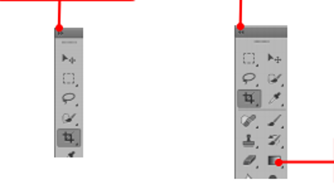

Welcome to Photoshop CS6
ຍິນດິຕ້ອນຮັບເຂົ້າສູ່ໜ້າເວັບບົດຮຽນໂຟ້ຊ້ອບ

ຍິນດິຕ້ອນຮັບເຂົ້າສູ່ໜ້າເວັບບົດຮຽນໂຟ້ຊ້ອບ

ເລີ່ມຕົ້ນການຮຽນຮູ້ຂອງແຕ່ງຮູບພາບ ແລະ ການອອກແບບກຣາຟິກດີຊາຍທີ່ສວຍງາມທັນສະໄໝ
Photoshop CS6 ຈະແຕກຕ່າງຈາກ CS3, CS4, CS5 ພຽງແຕ່ໜ້ອຍດຽວ ພື້ນຖານຂອງໂປຣແກຣມ ຍັງຄືເກົ່າ ແຕ່ຈະປັບປ່ຽນການໃຊ້ໃຫ້ງ່າຍຂຶ້ນ ມີການເກັບຮວບຮວມເຄື່ອງມືທີ່ກ່ຽວຂ້ອງເອົາໄວ້ໃນເມນູທີ່ດຽວກັນ ເພີ່ມຊຸດເຄື່ອງມືເຂົ້າມາໃໝ່ ແລະ ຍັງຫຼຸດຂັ້ນຕອນການເຮັດວຽກໃຫ້ໜ້ອຍລົງ ເຮັດໃຫ້ໃຊ້ງານສະດວກຫຼາຍຂຶ້ນໃນເວີຊັ້ນນີ້ໄດ້ເພີ່ມແຖບເຄື່ອງມືທີ່ໄດ້ໃຊ້ເປັນປະຈໍາ ວາງແຍກອອກມາຈາກກຸ່ມເຄື່ອງມືເດີມໆ ເຊິ່ງໜ້າຈໍໃໝ່ຂອງໂປຣແກຣມ photoshop cs6 ກໍ່ຈະມີສ່ວນປະກອບດັ່ງຮູບລຸ່ມນີ້:
ຮູບທີ່11: ໜ້າຕ່າງປະກອບໂດຍລວມຂອງໂປຣແກຣມ
ຮູບທີ່12: ແຖບ Option bar ຂອງໂປຣແກຣມ
ຮູບທີ່13: ແຖບ Option bar ຂອງໂປຣແກຣມ
ຮູບທີ່14: ແຖບ Tool box ຂອງໂປຣແກຣມ
ຮູບທີ່15: ແຖບ Panel ຂອງໂປຣແກຣມ
ຊຸດເຄື່ອງມື ( Tool box ) ຈະເປັນຊຸດເຄື່ອງມືທີ່ໃຊ້ຈັດການກັບໄຟລທີ່ເຮົາສ້າງຂຶ້ນ ໂດຍແບ່ງອອກເປັນ ກຸ່ມຍ່ອຍທັງໝົດ 8 ກຸ່ມຕາມຮູບແບບການໃຊ້ງານດັ່ງນີ້:
ຮູບທີ່16: ສະແດງກ່ອງເຄື່ອງມື
ສຳລັບວິທີການເອີ້ນໃຊ້ເຄື່ອງມືຕ່າງໆທີ່ຢູ່ໃນກ່ອງເຄື່ອງມືແຕ່ລະກຸ່ມສາມາດເຮັດໄດ້ 2 ວິທີດດັ່ງນີ້:
ຮູບທີ່17: ສະການເອີ້ນໃຊ້ຊຸດເຄື່ອງມືຍ່ອຍ
Tool Panel ຫຼື ກ່ອງເຄື່ອງມືຈະປະກອບໄປດ້ວຍເຄື່ອງມືຕ່າງໆທີ່ໃຊ້ໃນການແຕ້ມ, ຕົກແຕ່ງ ແກ້ໄຂຮູບ ພາບເຄື່ອງມືເຫຼົ່ານີ້ມີຈຳນວນຫຼວງຫຼາຍ ດັ່ງນັ້ນ ຈຶ່ງມີການລວບລວມເຄື່ອງມືທີ່ເຮັດໜ້າທີ່ຄ້າຍໆກັນໄວ້ໃນປຶ້ມດຽວ ກັນໂດຍຈະມີລັກສະນະຮູບສາມຫຼ່ຽມຢູ່ບໍລິເວນແຈລຸ່ມ ດັ່ງຮູບເພື່ອບອກໃຫ້ຮູ້ວ່າໃນເຄື່ອງມືນີ້ຍັງມີເຄື່ອງມືອື່ນຢູ່ນຳ.
ຮູບທີ່18: ສະແດງກ່ອງເຄື່ອງມື
A ກຸ່ມເຄື່ອງມືສຳລັບການເລືອກຍ້າຍຊິ້ນສ່ວນທີ່ເລືອກ ຫຼື ຮູບພາບໄປໄວ້ຕຳແໜ່ງທີ່ຕ້ອງການລວມເຖິງສ້າງ Selection ເພື່ອເລືອກເຮັດວຽກກັບສ່ວນໃດໜຶ່ງຂອງຮູບພາບ ເຊັ່ນ: ການລະບາຍສີ ຫຼື ລົບສ່ວນທີ່ບໍ່ຕ້ອງການ ອອກໄປເຊິ່ງປະກອບດ້ວຍເຄື່ອງມືຕ່າງໆດັ່ງນີ້:

ຕາຕະລາງທີ1 :ສະແດງກ່ອງເຄື່ອງມືສຳລັບການຍ້າຍ
B ກຸ່ມເຄື່ອງມືສໍາລັບການຕັດຮູບພາບເພື່ອເລືອກສະເພາະສ່ວນ ຫຼື ຕັດຮູບພາບເພື່ອໃຊ້ໃນເວບໄຊທ໌

ຕາຕະລາງທີ2 :ສະແດງກຸ່ມເຄື່ອງມືສໍາລັບການຕັດຮູບພາບເພື່ອເລືອກສະເພາະສ່ວນ
C ກຸ່ມເຄື່ອງມືສຳລັບການວັດຄ່າເຊັ່ນ ເກັບຄ່າສີເພື່ອປຽບທຽບ, ວັດແທກໄລຍະ ແລະ ການກວດຈັບ

ຕາຕະລາງທີ3 :ສະແດງກຸ່ມເຄື່ອງມືສໍາລັບການວັດແທກຮູບພາບ
D ກຸ່ມເຄື່ອງມືສຳລັບການຮີດຮູບພາບ ໂດຍແບ່ງເປັນກຸ່ມເຄື່ອງມືຍ່ອຍໄດ້ແກ່ກຸ່ມການແກ້ໄຂພື້ນຜິວ, ກຸ່ມສຳລັບການຕັດສາກຫຼັງ, ກຸ່ມສຳລັບປັບຄວາມຄົມຊັດ ແລະ ກຸ່ມສຳລັບປັບແຕ່ງສີສະເພາະຈຸດ

ຕາຕະລາງທີ4 :ສະແດງກຸ່ມເຄື່ອງມືສຳລັບການຣີທັດຮູບພາບ
E ກຸ່ມເຄື່ອງມືສຳລັບການລະບາຍສີ ແລະ ການລົງສີດ້ວຍວິທີຕ່າງໆ ໂດຍມີກຸ່ມຍ່ອຍແບ່ງຕາມການໃຊ້ງານເຊັ່ນ: ການລະບາຍສີ, ແຕ້ມເສັ້ນ ແປງຮູບພາບໃຫ້ເປັນຮູບພາບລະບາຍສີ ຫຼື ການລົງສີແບບໄລ່ໂທນສີເປັນຕົ້ນ

ຕາຕະລາງທີ5 :ສະແດງກຸ່ມເຄື່ອງມືສຳລັບການລະບາຍສີ ແລະ ລົງສີ
F ກຸ່ມເຄື່ອງມືສຳລັບສ້າງຮູບຊົງເວັກເຕີ ຜູ້ໃຊ້ສາມາດບິດ ຫຼື ຕັດຮູບຊົງໄດ້ໂດຍບໍ່ສູນເສຍລາຍລະອຽດເຊັ່ນ: ການແຕ້ມຮູບໃນກຸ່ມເຄື່ອງມື Pen Tool, ການສ້າງຕົວອັກສອນ ຫຼື ການແຕ້ມຮູບຊົງໃນກຸ່ມ Shape Tool

ຕາຕະລາງທີ6 : ສະແດງກຸ່ມເຄື່ອງມືສຳລັບສ້າງຮູບຊົງ Vector
G ກຸ່ມເຄື່ອງມືສຳລັບການຈັດການກັບການສະແດງຂອງຮູບພາບ ມີທັງໝົດ 3ເຄື່ອງມືດັ່ງນີ້:

ຕາຕະລາງທີ7 : ສະແດງກຸ່ມເຄື່ອງມືສຳລັບການຈັດການກັບການສະແດງຂອງຮູູບພາບ
H ກຸ່ມເຄື່ອງມືສຳການຈັດການກັບໂໝດຂອງໜ້າຈໍ ດັ່ງນີ້:

ຕາຕະລາງທີ8 : ສະແດງກຸ່ມເຄື່ອງມືສຳການຈັດການກັບໂໝດຂອງໜ້າຈໍ
ຮູບທີ່19-20: ເມນູຍ່ອຍຂອງ File ແລະ Edit
ຮູບທີ່24-26: ເມນູຍ່ອຍຂອງ Filter, 3D ແລະ View
ຮູບທີ່27-29: ເມນູຍ່ອຍຂອງ Windows, Help ແລະ Leyer
ຮູບທີ່30: ສະແດງເມນູພ້ອມໜ້າຕ່າງຍ່ອຍຂອງເມນູຫຼັກ

ຕາຕະລາງທີ9: ສະແດງຮູບແບບການເຮັດວຽກຂອງເມນູຄຳສັ່ງ
ກ່ອນທີ່ຈະຮຽນຮູ້ການເຮັດວຽກກັບໄຟລ໌ຮູບພາບ ເຮົາຄວນຮູ້ ແລະ ເຂົ້າໃຈກ່ຽວກັບສ່ວນປະກອບຂອງໜ້າຕ່າງຮູບພາບກ່ອນ ເພື່ອໃຫ້ສາມາດໃຊ້ງານສ່ວນອື່ນໆໄດ້ງ່າຍຂຶ້ນ ດັ່ງນີ້:

ຮູບທີ 31 : ສະແດງສ່ວນປະກອບຂອງໜ້າຕ່າງຮູບພາບ
ພ້ອມແລ້ວທີ່ຈະເຂົ້າການຕັດຕໍ່ຮູບພາບ ແລະ ການອອກແບບຕາມຄວາມຕ້ອງການທີ່ຈະດີຊາຍອອກມາໃນແບບຂອງເຮົາ